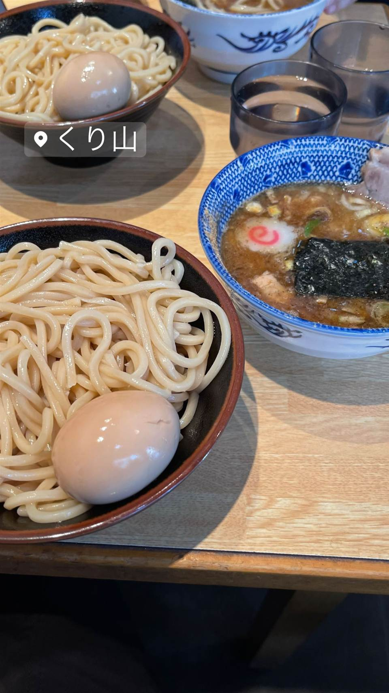

ラーメン · つけ麺 · 白楽
★ また行きたいつけ麺で8位
くり山(白楽本店)
山岸一雄最後の愛弟子が仕上げる濃厚つけ麺
くり山
くり山は、つけ麺発祥の店・東池袋大勝軒で山岸一雄氏に約4年師事し「最後の愛弟子」と呼ばれた栗山氏が、六厘舎などを経て2008年に開いた店。当初は「仁鍛」の屋号だったが2011年に「くり山」へ改称し、白楽の行列店として知られる。
TRIVIA
豆知識
- 店主は「山岸一雄の最後の愛弟子」と呼ばれる
- 開業当初の屋号は「くり山」ではなく「仁鍛」だった
REVIEWS
世間の評判
97.6ラーメンDB3.76食べログ
サラサラでも塩強めのつけ汁
- 六厘舎仕込みのサラサラでも塩味の強いつけ汁を評価する声が多い
- 梅おろしやしらすおろしなど季節限定のメニューに注目が集まっている
- 食券を渡してから料理の提供が早く回転が良いと感じる声が複数ある
ラーメンデータベース 総合83位・最新 2026-09
| 創業 | 2008年4月創業（当初の屋号は「仁鍛」、2011年に「くり山」へ改称） |
|---|---|
| 系譜 | つけ麺発祥の店・東池袋大勝軒（山岸一雄氏）で修行後、暖簾分け店「六厘舎」、その支店「次念序」で店長を経て独立。 |
| 看板 | つけ麺 |
| こだわり | 動物系と魚介系を効かせたスープに、コシの強い極太麺。昼は中程度、夜は濃厚寄りにスープの濃度を変えている。 |
| どこから | 東京から1時間ほど |
| 行くなら | 行列 |
| 営業時間 | 月〜金 11:00-15:00、17:00-21:00 土・日 11:00-21:00 |
| 予算 | 昼 ～¥999 夜 ～¥999 |
| 場所 | 白楽駅 神奈川県横浜市神奈川区(白楽) |
| メモ | 食券制、行列が絶えない人気店。新横浜などに支店展開。 |
食べたもの：つけ麺
ひとりで入りやすい
地図で見る店の情報ラーメンDBX（その日の営業）Instagram
NEARBY
近い店・同じ系統の店
-
 ★
つけ麺 新小岩
麺屋 一燈
フレンチ出身の店主が42歳で始めた濃厚魚介豚骨つけ麺
昼 ¥1,000～¥1,999 夜 ¥1,000～¥1,999
★
つけ麺 新小岩
麺屋 一燈
フレンチ出身の店主が42歳で始めた濃厚魚介豚骨つけ麺
昼 ¥1,000～¥1,999 夜 ¥1,000～¥1,999
-
 ★
つけ麺 東十条
燦燦斗（さんさんと）
1日2時間半だけの営業、寺子屋仕込みのつけ麺
夜 ～¥999
★
つけ麺 東十条
燦燦斗（さんさんと）
1日2時間半だけの営業、寺子屋仕込みのつけ麺
夜 ～¥999
-
 ★
つけ麺 神田
三馬路 東京店（サンマロ）
博多祇園の名店をルーツに持つ、百名店選出の淡麗塩そば
夜 ¥1,000～¥1,999
★
つけ麺 神田
三馬路 東京店（サンマロ）
博多祇園の名店をルーツに持つ、百名店選出の淡麗塩そば
夜 ¥1,000～¥1,999
-
 ★
家系 白楽駅
ラーメン 末廣家
吉村家直系、吊るし焼きチャーシューが看板の家系
夜 ～¥999
★
家系 白楽駅
ラーメン 末廣家
吉村家直系、吊るし焼きチャーシューが看板の家系
夜 ～¥999
-
 ★
つけ麺 青葉台駅
らぁ麺 すぎ本
ラーメンの鬼、最後の弟子が作る自家製麺のつけ麺
昼 ¥1,000～¥1,999 夜 ¥1,000～¥1,999
★
つけ麺 青葉台駅
らぁ麺 すぎ本
ラーメンの鬼、最後の弟子が作る自家製麺のつけ麺
昼 ¥1,000～¥1,999 夜 ¥1,000～¥1,999
-
 ★
つけ麺 地下鉄成増
中華そば べんてん
べんてん-とし岡系という系譜を生んだ源流店とされる中華そば
昼 ¥1,000～¥1,999
★
つけ麺 地下鉄成増
中華そば べんてん
べんてん-とし岡系という系譜を生んだ源流店とされる中華そば
昼 ¥1,000～¥1,999